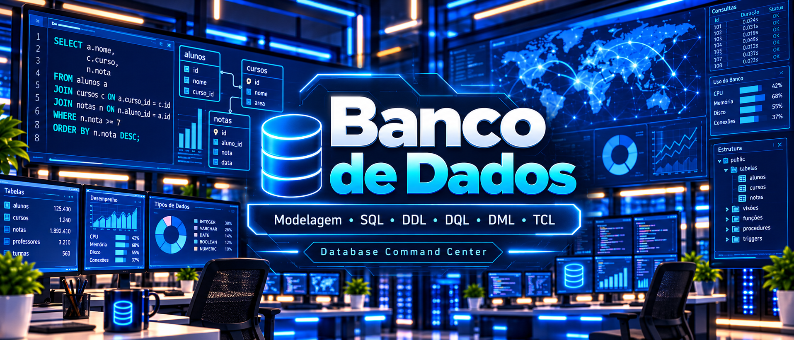
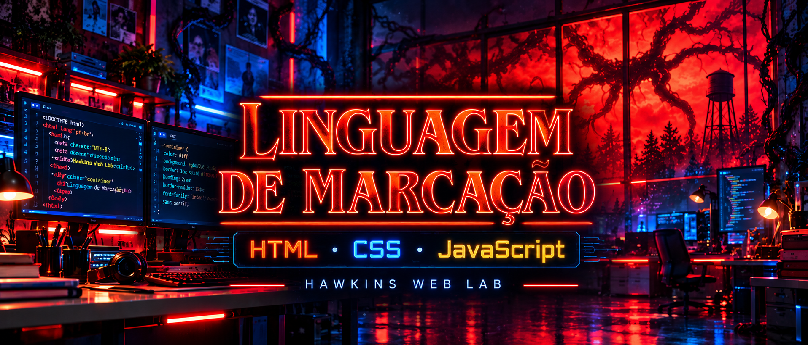
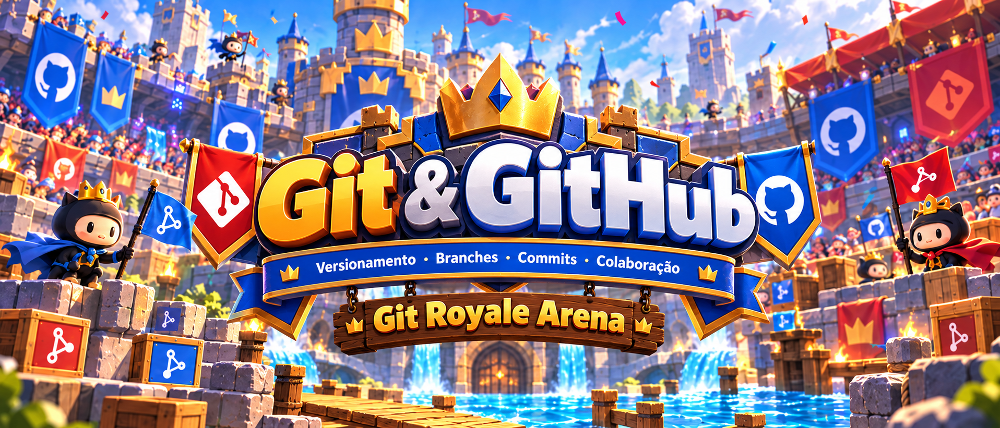

Banco de Dados
Database Command Center
Aulas interativas de fundamentos, modelagem, SQL e integridade, organizadas até a Aula 10.
- Fundamentos e configuração
- MER, DER e Dicionário de Dados
- DDL, DQL, DML e TCL
Escola SENAI Luiz Varga - Limeira/SP - CFP 505
Aprenda. Experimente. Desenvolva.

Banco de Dados
Aulas interativas de fundamentos, modelagem, SQL e integridade, organizadas até a Aula 10.

Linguagem de Marcação
Uma jornada por HTML, CSS e JavaScript, com experiências visuais inspiradas no universo de Hawkins.

Git & GitHub
Uma arena de consulta rápida para dominar versionamento, branches, commits, GitHub, conflitos e publicação.
Projeto integrador
Acesso direto
Todo o conteúdo didático está disponível diretamente pelo portal. Escolha uma trilha, avance pelas aulas e use os laboratórios interativos no navegador.